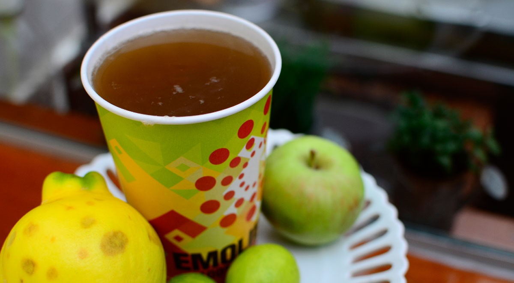
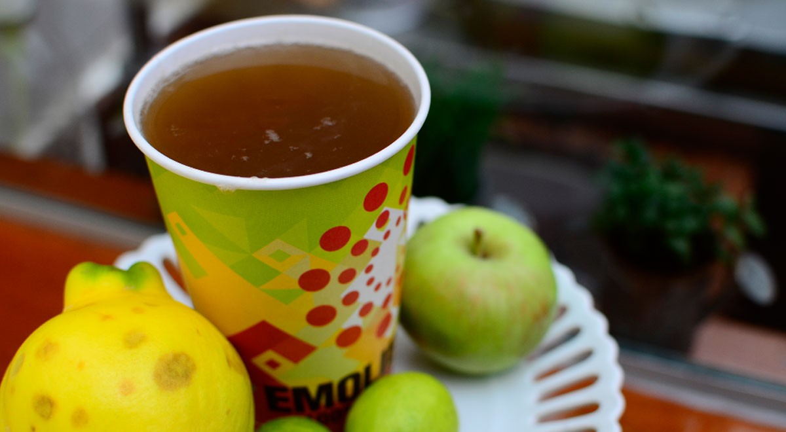

Ingredientes
- ½ taza de cebada tostada
- 1 ramo de hierba cola de caballo
- 1 trozo de uña de gato
- 2 cucharadas llenas de linaza
- 1 litro de agua
- 1 canela entera
Utensilios
- Olla De Acero Inoxidable
- Cucharon ondo de cocina
- Cucharon de madera
Especialistas en nutrición explicaron a El Comercio los beneficios que el emoliente brinda a la salud. Es diurético y reduce el colesterol.
 



La mazamorra morada es uno de los postres más populares de Perú. Tanto es así, que hoy en día es conocida en prácticamente todo el mundo. Se caracteriza por presentar una textura espesa y suave a la vez, un sabor dulce y un color morado intenso.
 Costa
Costa
 Postre
Postre

El seco de carne o también conocido como guiso de res es un platillo típico de Perú. Como bien lo dice su nombre, se trata de un guiso sustancioso lleno de mucho sabor peruano, ya que lleva varios ajíes autóctonos de nuestro país. Se acostumbra a consumirse como plato principal acompañado de un poco de arroz.
 Sierra
Sierra
 Platillos
Platillos